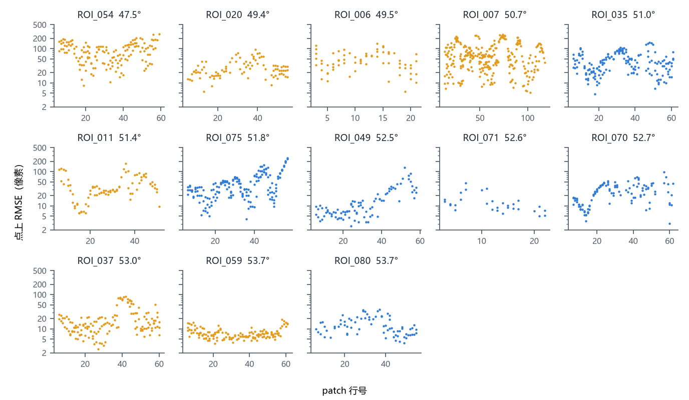

样本难度 ›
沿条带的变化
每个 ROI 是 SAR 条带上的一段狭长区域，patch 对按行、列排列，行沿条带方向。

每张小图一个 ROI，按入射角从小到大排，标题是 ROI 名与入射角。每点一个 patch 对，横轴是 patch 行号，纵轴是点上 RMSE，对数刻度，各图相同。
上下或左右相邻的 patch 对有 2262 组。两者点上 RMSE 之比（大比小）的中位数是 1.35，90 分位 2.57；取对数后的相关系数是 0.84。
同一 ROI 内，点上 RMSE 沿条带成段起伏，高低可以差十倍以上。把 ROI_049 的行按顺序分成三段，三段的中位数依次是 6.3、9.4、32.9 像素。ROI_059 三段的中位数都在 6–8 像素之间。